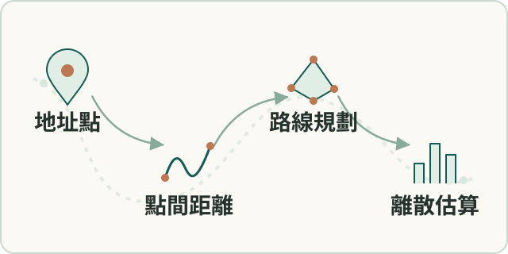

空間分析
訪區路線與離散程度分析
以地址點距離與路線最佳化方法估算訪區行程。
- 我的角色
- 本人完成訪區分組、點對距離、保守缺值補估與 TSP 路線方法，將正式樣本轉成路程規劃資料。

工作流程示意（點圖放大）要解決的問題
訪區分散程度影響訪員路程及預算，需可計算距離及代表路線。
輸入、處理與產出
- 輸入
- 抽樣地址與訪員負責範圍；公開頁不展示名單或真實座標。
- 處理方式
- 先依訪區分組，再建立點間距離矩陣；對缺值保留估計規則，分區求TSP。
- 產出
- 訪區總距離、平均距離、拜訪順序與路線地圖，供調查規劃。
適用範圍
缺值補估為當時規則，未證明等同實際路程；此為路線規劃而非機器學習分群。
核心問題與我的做法
先把路線問題限定在訪員真正負責的範圍
抽樣地址分散；若跨區一起求最短路線，數學解不一定符合實際派工。
以鄉鎮與訪員編號定義訪區，再分區求路線。 合併地址座標、建立各訪區距離矩陣，以路線求解器輸出拜訪順序。
產出每個訪區的總距離、平均距離、樣本順序與地圖，提供規劃依據。
距離抓不到時，規劃仍能繼續
大量地址點對的實際步行距離可能缺漏；直接以直線距離代替會低估路程。
先保留直線距離底表，再對缺值採1.5倍直線距離的估計規則。 逐筆保存距離擷取結果，補齊雙向與自身距離，建立可供求解的矩陣。
使後續規劃不因缺值中斷；係數為當時估計規則，未證明已校準到實際路程。
成果與驗證
輸出訪區總距離、平均距離、樣本順序及路線地圖，供調查規劃。
Python · Selenium · OR-Tools · Folium